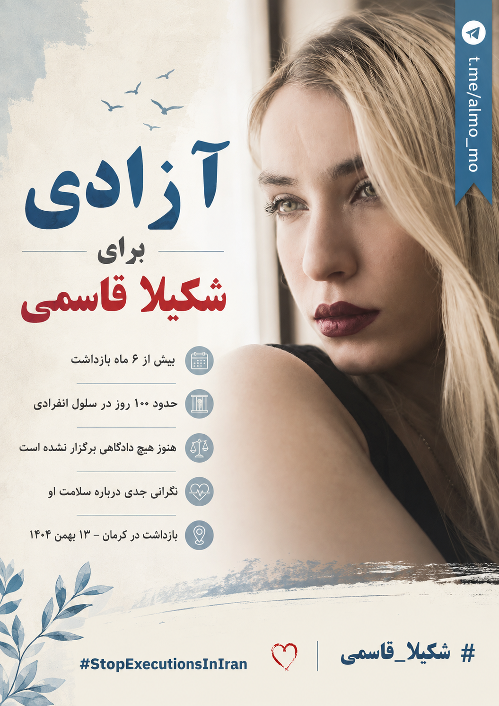

✓ وضعیت فعلی: آزاد با وثیقه
✅ خبر خوب: شکیلا قاسمی با وثیقه آزاد شد
شکیلا قاسمی
Shakila Ghasemi
شکیلا قاسمی، شهروند بهائی ۲۶ ساله ساکن کرمان، پس از بیش از شش ماه بازداشت، روز شنبه ۲۴ مرداد ۱۴۰۵ (۱۵ اوت ۲۰۲۶) با تودیع وثیقه از زندان کرمان آزاد شد. او در ۱۳ بهمن ۱۴۰۴ بازداشت شده بود و بنا بر گزارشهای حقوق بشری، حدود ۴۷ روز در بازداشتگاه اطلاعات سپاه تحت بازجویی و در مجموع حدود ۱۰۰ روز در سلول انفرادی نگهداری شد. آزادی او با وثیقه به معنای پایان پرونده قضایی یا تبرئه نیست و روند پرونده همچنان باید پیگیری شود.
وضعیت فعلی: شکیلا اکنون خارج از زندان است و با تودیع وثیقه آزاد شده است. تا زمانی که پرونده او رسماً مختومه نشده، وضعیت حقوقی و ادامه روند قضایی باید زیر نظر بماند.
توجه: ۱۰۰۰ متن زیر آرشیو کمپین دوران بازداشت شکیلا هستند و وضعیت پیش از آزادی او را توصیف میکنند. متنهایی که میگویند شکیلا «همچنان در زندان است»، «باید آزاد شود» یا وثیقه او پذیرفته نشده، دیگر نباید بهعنوان وضعیت فعلی بازنشر شوند.
#ShakilaGhasemi
#شکیلا_قاسمی
#StopExecutionsInIran
۱۰۰۰متن آرشیوی
۴۰۰پست مستقیم
۳۰۰ریپلای
۳۰۰کوتپست